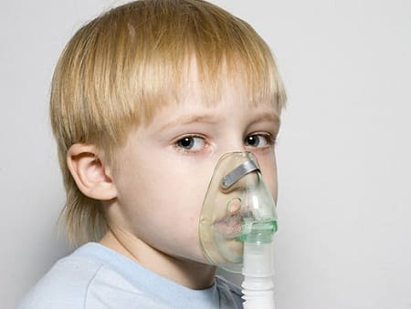
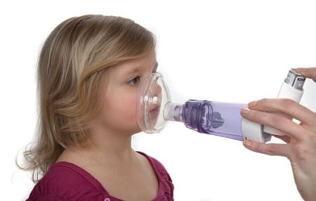
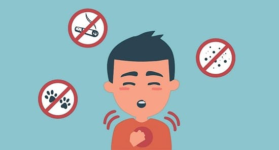
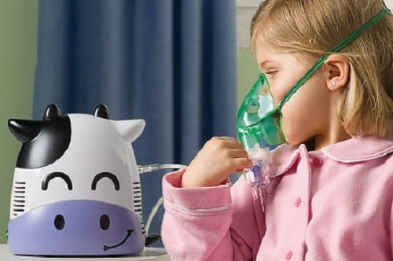
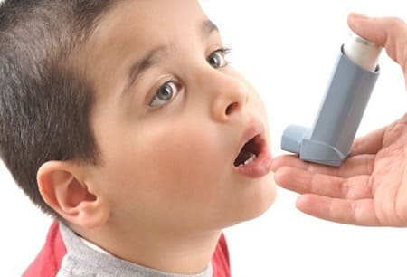
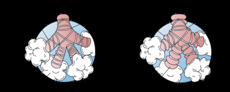

Термин «астма» означает просто «хрипеть». Хрип возникает при прохождении воздуха в легкие через суженные дыхательные пути. При астме дыхательные пути сужаются по двум причинам:
• сжатие (бронхоспазм): мышцы вокруг дыхательных путей спазмируются, сужая их;
• воспаление: слизистая оболочка дыхательных путей отекает и продуцирует слишком много слизи.
Таким образом, лечение астмы направлено на снятие бронхоспазма, чтобы расширить дыхательные пути, и уменьшение воспаления, чтобы слизистая не отекала и не секретировала столько слизи. Модель медицинской помощи «таблетки-навыки», действительно великолепна при лечении астмы.
В дополнение к таблеткам — медикаментам, снимающим бронхоспазм, и противовоспалительным — мы покажем вам, как преподать вашему ребенку навыки самопомощи для расслабления бронхов и подавления воспаления.
СИМПТОМЫ
У ребенка, у которого раз-другой была одышка, не обязательно развилась астма. Астма — хроническое состояние, когда ребенок страдает от повторяющихся эпизодов бронхоспазма. Эти симптомы могут повторяться ежедневно или редко. Ребенку не поставят диагноз астмы, пока он не перенесет несколько эпизодов или приступов удушья.
Вот четыре основных признака, чтобы определить, есть ли у вашего ребенка астма:
• хрипы. Это отличительный симптом астмы. Хрипы при бронхиальной астме сухие, свистящие. Выдох при этом становится длительным, затрудненным;
• затрудненное дыхание. Некоторые больные ощущают, что не могут вдохнуть. Они помогают себе, двигая плечами вверх-вниз, чтобы вдохнуть;
• втяжения уступчивых мест грудной клетки. Во время приступа отмечается втяжение межреберных промежутков, нижней трети грудной клетки, мечевидного отростка;
• хронический кашель. У некоторых детей присутствует хронический кашель — днем или ночью. Обычно он неглубокий, насильственный, единичный, в отличие от приступообразного глубокого мерзкого кашля при бронхите. Астматик загоняет воздух в легкие через сопротивление (даже при том, что кашель в основном выводит его).

СОВЕТ ДОКТОРОВ СИРС: НЕ ЗАБЫВАЙТЕ ПРО ГЭРБ Одна из наиболее распространенных скрытых причин удушья — гастроэзофагальный рефлюкс. Поступающая из желудка соляная кислота вызывает раздражение, спазм и сужение дыхательных путей. Вылечите рефлюкс), и астма больше не будет беспокоить вашего малыша. |
ТИПЫ АСТМЫ
Для понимания причины, выбора методов лечения и профилактики важно выяснить, какой именно тип астмы у вашего ребенка. У него могут быть один, два или все три типа сразу.
«Нагрузочный» бронхоспазм (НБ). При этой форме астмы приступы у ребенка бывают только после физической нагрузки. У ребенка, к счастью, не бывает приступов ночью или при обычных нагрузках днем. Это часто называют «астмой напряжения».
Реактивная болезнь дыхательных путей (РБДП). При этом приступы бывают только во время простуды или бронхита. Когда ребенок здоров, у него нет проблем с дыханием даже при занятиях спортом.
Аллергическая астма. При этом самом неприятном типе астмы у ребенка случаются приступы затрудненного дыхания каждый раз, когда он сталкивается с веществом, на которое у него аллергия. Тяжесть и частота симптомов зависят от того, на что у ребенка аллергия и насколько легко избежать контакта с аллергеном. Они могут проявляться только в течение одного сезона или почти ежедневно — если у ребенка множественная аллергия на продукты и окружение. Вообще, если у вашего ребенка не просто приступы нагрузочного бронхоспазма или реакции дыхательных путей на болезнь, то, скорее всего, его астма имеет аллергическую природу.
ДИАГНОСТИКА
Первые пару раз удушье у ребенка обычно считается преходящим проявлением простуды, пневмонии или аллергии. Чтобы предположить астму, такие приступы должны повториться несколько раз или продолжаться не менее нескольких недель.
Важно определить, какой из вышеперечисленных типов астмы у вашего ребенка. Покажите ребенка врачу во время приступа, чтобы врач мог обследовать его и убедиться, что это именно удушье. Если вы считаете, что у вашего ребенка астма, но при обследовании врач не находит никаких нарушений дыхания — у аллерголога или пульмонолога можно сделать исследование функций внешнего дыхания (простейший тест, когда ребенок дует в специальную трубочку, соединенную с аппаратом), чтобы определить, ослаблено ли дыхание.

ЛЕЧЕНИЕ
Лечение астмы — это, несомненно, работа в команде. И вы, родитель, — главный член этой команды. Лечение вашего ребенка начинается с понимания способа лечения каждого типа астмы.
Лечение «нагрузочного» бронхоспазма (НБ). Со временем у ребенка может пройти астма напряжения. Поэтому поощряйте его занятия спортом. За двадцать-тридцать минут до начала тренировки ребенок должен воспользоваться инхаллером с бронхолитиком (например, сальбутамолом, форадилом) или противовоспалительным (кромоглином) средством — это предупредит сужение дыхательных путей. Ингаляцию при необходимости можно повторить во время тренировки или соревнований. Вы можете заметить, что занятия некоторыми видами спорта (особенно теми, где нагрузки частые и «взрывные» — бег на короткие дистанции или теннис) чаще сопровождаются приступами затруднения дыхания, чем теми, где нагрузка умеренная, но длительная (например, бег на длинные дистанции).
Лечение реактивной болезни дыхательных путей (РБДП). К счастью, дети с возрастом реже болеют ОРЗ с приступами бронхоспазма. Основной метод лечения — использование инхаллера или небулайзера с бронхолитиком при первых признаках ОРЗ и начинающегося бронхита. Это поможет вашему ребенку преодолеть приступ бронхоспазма и не даст развиться сильной одышке. Вы также можете последовать нашим советам по освобождению дыхательных путей от избытка слизи при кашле и простуде. Прежде всего укрепляйте иммунитет вашего ребенка, чтобы он реже болел.
Лечение аллергической астмы. Эффективность лечения этого типа астмы зависит от вида аллергии. У детей, реагирующих на немногие легко выявляемые и устраняемые аллергены, астма преодолевается без особых усилий. Тем же, у кого поливалентная, множественная аллергия, чтобы избежать приступов астмы, придется принимать лекарства много лет, если не всю жизнь. Дальнейшее наше обсуждение будет направлено на методы профилактики и лечения аллергической астмы.
ИНДИВИДУАЛЬНЫЙ ПЛАН ДЕЙСТВИЙ ПРИ АСТМЕ У ВАШЕГО РЕБЕНКА
Теперь, когда вы выяснили, какой тип астмы у вашего ребенка, мы предлагаем сделать следующее, чтобы сформулировать индивидуальный план действий (ИПД) при астме для вашего ребенка:
Степень соблюдения гипоаллергенного режима зависит от тяжести аллергии у вашего ребенка. Основные усилия направьте на соблюдение гипоаллергенного режима в комнате ребенка, так как там он проводит больше всего времени. Сделайте спальню максимально пыленепроницаемой. Уберите оттуда перьевые подушки, чучела животных, мягкие игрушки, которые собирают пыль, запретите домашним животным заходить в эту комнату, регулярно включайте там фильтры (НЕРА или ионизирующий) для удаления аллергенов. Пользуйтесь испарителем зимой. Старайтесь, чтобы влажность была около 50%. Помните, что слишком высокая влажность способствует росту плесени, а слишком низкая — усилению выработки слизи в дыхательных путях. В разделе об аллергическом рините описаны и другие меры создания гипоаллергенной обстановки в доме.
4. Ведите дневник астмы, записывайте все приступы одышки у ребенка. Вот пять самых важных моментов, на которые надо обратить внимание в дневнике:
• Как часто развиваются приступы удушья?
• Степень их тяжести. Например, пропускает ли ребенок школу, не высыпается, приходится ли обращаться в отделение «Скорой помощи», или это просто редкие эпизоды шумного дыхания, которые слегка мешают вашему ребенку, но не меняют его жизнь?
• Что вызывает приступы? Станьте родителем-детективом. Всегда, когда возможно, старайтесь определить причину приступа удушья. Случаются ли они, когда ребенок играет на улице, в комнате, когда он беспокоится или расстроен, если рядом курят, при появлении в семье нового животного?
• Как часто ребенок использует медикаменты, какие из них эффективны, какие — нет.
• Сколько раз за год ребенок побывал у врача или в отделении «Скорой помощи». Это очень важный раздел дневника, он поможет врачу определить, достаточно ли дать ребенка лекарство только во время приступа или он нуждается в постоянном приеме медикаментов для профилактики приступов. Кроме того, на основании этих записей врач сможет решить, можно ли контролировать астму у вашего ребенка с помощью только бронхорасширяющих медикаментов или необходимы противовоспалительное и какие-либо еще средства, солнечном итоге это необходимо, чтобы лечить вашего ребенка адекватно — не больше и не меньше.
5. Контролируйте течение астмы с мощью пикфлуометра. Врач представит вам этот прибор для оценки степени тяжести приступа, ребенок должен изо всех сил дуть в трубочку, и присоединенный к ней компьютер покажет, с какой скоростью он выдыхает. Определите нормальные для вашего ребенка показатели (врач может сказать вам норму для возраста и роста вашего ребенка) и сравнивайте с ними цифры, полученные во время приступа.

СОВЕТ ДОКТОРОВ СИРС: ОБОЗНАЧАЙТЕ ТЯЖЕСТЬ ПРИСТУПОВ РАЗНЫМИ ЦВЕТАМИ |
|
Зеленый свет: не беспокойтесь.
Желтый свет: Внимание. Пора дать лекарство.
Красный свет: немедленно обратитесь за медицинской помощью! |
Умеренный приступ астмы — максимум выдоха составляет 80—100%, что является нормой. Умеренный приступ — скорость выдоха 50—80% нормы.
Тяжелый приступ — скорость выдоха меньше 50% нормы. |
6. Научите ребенка расслабляться. Расслабленный мозг даст возможность расслабиться дыхательным путям. Стресс провоцирует сжатие мышц вокруг дыхательных путей — вот почему астму называют еще «бронхоспазмом». Образуется порочный круг: ребенок задыхается — пугается — дыхательные пути сжимаются еще больше, затрудняя дыхание и утяжеляя приступ. Расскажите ребенку о техниках расслабления, например, такой: «Как только ты почувствуешь, что тебе не хватает воздуха, расслабься, сядь неподвижно, думай о приятном, представь себе, что через твои легкие походит много воздуха...» Прочитайте ему спокойный рассказ или спойте колыбельную. Попытайтесь внушить своему ребенку уверенность в том, что он может управлять одышкой. Потеря контроля над собой вызывает у детей с астмой панику, которая ухудшает течение заболевания.
7. Проконсультируйтесь с врачом. Отведите ребенка (и не забудьте дневник) к врачу. Вот как события будут развиваться дальше: придя к заключению, что у ребенка астма, врач постарается назначить лечение соответственно тяжести заболевания. Исходя из вашего рассказа и записей в дневнике он решит, можно ли обойтись приемом лекарства только во время приступа или требуется ежедневный прием медикаментов для предупреждения приступов.
Сезонная (легкой степени тяжести) астма. Легкие неопасные приступы случаются в определенный сезон. У ребенка иногда бывает одышка или небольшое удушье, что не мешает ему посещать школу, играть или спать. В этом случае врач назначит так называемые препараты скорой помощи. Их используют только при необходимости, когда у ребенка приступ. Основной препарат скорой помощи — беродуал. Он выпускается в виде инхаллера, не содержит кортикостероиды и расслабляет мышцы, сжимающие дыхательные пути, что приносит облегчение через 5—15 минут. При тяжелой астме врач может назначить прием кортикостероида внутрь на три-пять дней. Хотя он начнет работать не раньше, чем через 8 часов, это самый эффективный способ снять воспаление, которое блокирует дыхательные пути.

СОВЕТ ДОКТОРОВ СИРС: СТЕРОИДЫ БЕЗОПАСНЫ ПРИ АСТМЕ То, что в лечении астмы используются стероиды и противовоспалительные препараты, беспокоит многих родителей. Однако многочисленные исследования доказали, что это безопасно и эффективно. Мы знаем, что постоянные и неконтролируемые приступы удушья могут вызвать нарушения роста и повреждения сердца — таким образом, отдаленные побочные эффекты медикаментов представляют собой намного меньшую опасность по сравнению с нелеченной астмой. |
Врач посоветует вам продолжать вести дневник и пользоваться пикфлуометром. Если на фоне приема препаратов скорой помощи (ингаляторов и, возможно, стероидов) течение астмы у вашего ребенка утяжеляется, он чаще пропускает школу, вы вынуждены чаще обращаться к врачу или вызывать «Скорую помощь», врач перейдет к следующему этапу.
Астма средней тяжести. Некоторые препараты предназначены для ежедневного использования, чтобы предупредить сужение дыхательных путей и развитие в них воспаления. При этом у ребенка отсутствуют илинамного реже случаются приступы удушья. Разумеется, с этих препаратов (их называют контролирующими) можно начать лечение, если у вашего ребенка частые приступы. Если они длятся более трех дней в месяц или протекают настолько тяжело, что приходится каждый раз обращаться за медицинской помощью, то лечение контролирующими препаратами наверняка будет назначено. Эти лекарства бывают трех видов:
• контролирующие препараты в виде ингаляторов-инхаллеров: сюда относятся стероиды и кромоглин, которые подавляют аллергический процесс в дыхательных путях, и бронхолитические средства длительного действия, которые уменьшают сужение дыхательных путей. Инхаллеры бывают двух видов: помповые и дисковые;
• контролирующие препараты для приема внутрь: сюда относятся таблетирование кортикостероиды и ингибиторы лейкотриенов, которые подавляют аллергическое воспаление в бронхах. Есть оральные бронхолитиком, но их редко назначают детям;
• противоаллергические препараты. Противоаллергические таблетки или назальные спреи помогают предотвратить приступ астмы во время сезона аллергии.
Ваш врач поможет вам решить, требует ли заболевание вашего ребенка использования контролирующих препаратов. Часто их используют в аллергический сезон или в период простуд и гриппа, чтобы избежать приступов удушья.

Возможные побочные эффекты противоастматических препаратов. Основной побочный эффект бронхолитиком — они могут увеличивать частоту сердечных сокращений, из-за чего ребенок может стать беспокойным или гиперактивным. Этот довольно невинный, но редкий эффект считается приемлемым, так как лечить астму важнее. У стероидов и других противовоспалительных препаратов побочных эффектов немного.
Как пользоваться инхаллером. Есть несколько способов эффективно дать препарат с помощью инхаллера ребенку в зависимости от его возраста:
• младенцам обычно рекомендуют небулайзер. Это небольшой воздушный насос распыляет лекарственный аэрозоль, который нужно вдыхать в течение нескольких минут;
• маленьким детям, как правило, назначают инхаллер со «спейсером» — трубкой, которая присоединяется к ингалятору. Взрослый накачивает препарат в трубку, и ребенок несколько раз делает вдох через нее;
• старших детей обычно обучают пользоваться инхаллером самостоятельно. Сделать это может врач, провизор в аптеке или специально обученный инструктор.
СОВЕТ ДОКТОРОВ СИРС: КАК ПРАВИЛЬНО ПОЛЬЗОВАТЬСЯ ПОМПОВЫМ ИНХАЛЛЕРОМ Правильное использование — ключ к эффективности инхаллера вообще. Следуйте пошаговой инструкции: 1. Держите инхаллер на расстоянии около 5 см от губ (не во рту!). 2. Предложите ребенку выдыхать спокойно, а вдыхать глубоко. 3. Сразу же распылите инхаллер. 4. Скажите ребенку задерживать дыхание на 5—10 секунд (как ему удобнее), но не больше. 5. Подождите 2 минуты и повторите ингаляцию (если назначено 2 дозы). Дисковые инхаллеры работают иначе, и у каждого производителя свои инструкции. Следуйте им. |
Если астма вашего ребенка не усиливается в течение нескольких месяцев, то врач может предложить отказаться от ежедневного приема лекарств и вернуться к препаратам скорой помощи во время приступов. Врач будет постоянно контролировать состояние дыхания вашего ребенка, чтобы поддерживать минимальную частоту приступов, которые не ухудшали бы качество его жизни, и в то же время не перегрузить лекарствами и избежать развития побочных эффектов. Так что продолжайте внимательно следить за состоянием ребенка и рассказывать о нем врачу — это поможет ему назначать адекватное лечение.
АСТМАТИЧЕСКИЕ ПРИСТУПЫ
У вашего ребенка наверняка периодически будут развиваться астматические приступы. Их выраженность может варьировать от умеренной до тяжелой и важно, чтобы вы знали, что делать в каждом случае до визита к врачу. В этих ситуациях полезен пикфлуометр, если он у вас есть. Действуйте следующим образом:
Первый приступ астмы. Если это первый приступ удушья у вашего ребенка и у вас нет никаких противоастматических медикаментов, то, скорее всего, врач не сможет назначить их по телефону без осмотра. Начните с методов облегчения дыхания. Если это не поможет, отправляйтесь к своему врачу, если он на работе, или в отделение неотложной помощи.
Легкий приступ у ребенка с установленным диагнозом астмы. При легком приступе вы слышите хрипы, но ребенок особо не ощущает нехватки воздуха, достаточно просто ограничить его обычную активность. При этом вы не наблюдаете втяжений уступчивых мест грудной клетки при дыхании, ребенок не поднимает плечи, чтобы вдохнуть, и не опускает их на выдохе, частота дыханий у него не превышает 40 дыхательных движений в минуту.
Используйте инхаллер с препаратом скорой помощи (например, беродуалом) и подождите улучшения. Тем временем, возможно, начнется прием у вашего врача. Давайте лекарство скорой помощи, как назначено (обычно каждые 4 часа), чтобы стабилизировать состояние ребенка.

СОВЕТ ДОКТОРОВ СИРС: НАПИШИТЕ ПОДРОБНЫЙ ИНДИВИДУАЛЬНЫЙ ПЛАН ДЕЙСТВИЙ Врач подробно расскажет вам, какие лекарства использовать и как действовать в каждой из описанных ситуаций. Основываясь на этом, составьте и запишите подробный план действий для каждого случая. |
Приступ астмы средней тяжести. Вы заметите втяжения, активность ребенка снижена, он двигает плечами, чтобы облегчить себе вдох. Частота дыханий при этом — 40—60 в минуту. Начинайте такое же лечение, как и при легком приступе, но не спускайте с ребенка глаз. Если его состояние не улучшается — звоните своему врачу, чтобы обсудить ситуацию.
При этом ребенок сильно двигает плечами, чтобы помочь дыханию, дышит чаще чем 60 раз в минуту. Он может побледнеть, губы приобретают синеватый оттенок, вы заметите сильные втяжения и услышите громкие хрипы (или не услышите, если объем вдыхаемого воздуха очень мал). В такой ситуации примените препараты скорой помощи и немедленно везите ребенка к врачу или в отделение неотложной помощи. С дороги позвоните врачу, чтобы решить, что делать.
ЧТО ДЕЛАТЬ
Если у вашего ребенка астма и он нуждается в медикаментозном лечении, не опускайте руки, положившись на лекарства. Вот несколько важных вещей, которые вы можете сделать.
Профилактика аллергии. Мы уже говорили об этом, но повторимся: сделайте все возможное, чтобы выявить причину аллергии.
Общайтесь и наблюдайте. Не забывайте спрашивать у ребенка о том, как он дышит. Отмечайте в календаре дни, когда использовался инхаллер или другие медикаменты. Записывайте все приступы, даже легкие, чтобы показать врачу. Посещайте школу астмы при вашей больнице. У старших детей хорошо использовать пикфлуометр для контроля состояния ребенка.
Правильно применяйте лекарства. Применяйте контролирующие препараты так, как назначил врач. Отказ от них может привести к злоупотреблению препаратами скорой помощи и в результате — длительному снижению их эффективности. Ежедневное примнение контролирующих препаратов намного безопаснее ежедневного применения препаратов скорой помощи.
КОНТРОЛЬНЫЙ СПИСОК ПРОФИЛАКТИЧЕСКИХ МЕРОПРИЯТИЙ ПРИ АСТМЕ
Мероприятие |
Да |
Нет |
Вы разработали индивидуальный план действий вместе с врачом? |
|
|
Вы ведете дневник астмы? |
|
|
Вы соблюдаете гипоаллергенный режим в комнате ребенка? |
|
|
Вы запретили курить при ребенке? |
|
|
Вы используете пикфлуометр для оценки тяжести состояния ребенка? |
|
|
Вы понимаете, когда и как применять препараты скорой помощи? |
|
|
Вы понимаете, когда и как применять контролирующие препараты? |
|
|
У вас дома есть небулайзер? |
|
|
Вы кормите ребенка продуктами, укрепляющими иммунитет? |
|
|
Вы учите ребенка методам расслабления? |
|
|
Здоровье ребенка от докторов Сирс / Сирс У. и др.